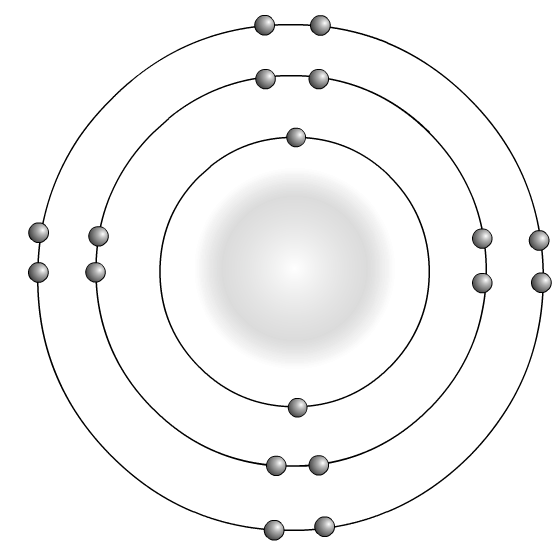
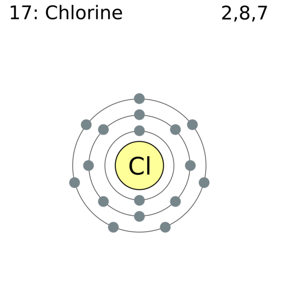
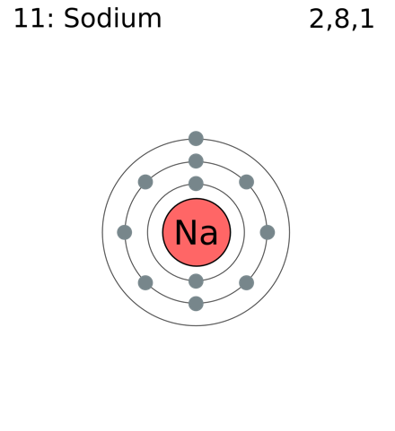

3.1 The Shell Model of the Atom
The chemical properties of an element depend on its outer shell (valence) electrons. Chemists are most interested in how electrons are arranged, because this affects the way atoms react.
Electrons move very fast around the nucleus at different energy levels. They are not free to move in random orbits: they exist in fixed energy levels called shells.
- The first shell, closest to the nucleus, is the lowest energy level. The further a shell is from the nucleus, the higher its energy.
- Shells are numbered from the inside out: 1, 2, 3 and so on.
- Electrons fill the shells from the inside out. Inner shells are smaller and hold fewer electrons.
- As the number of electrons and shells increases, so does the size of the atom.

Electron shell capacity
Each shell has a maximum number of electrons it can hold. The innermost shell can hold a maximum of 2 electrons, and each shell further out can hold more.
Complete the table, then write the general formula.
| Shell | Maximum number of electrons |
|---|---|
| 1st | 2 |
| 2nd | 8 |
| 3rd | 18 |
| 4th | |
| 5th |
General formula: the maximum number of electrons in shell n is
Using 2n2: shell 4 holds 2 × 42 = 32 and shell 5 holds 2 × 52 = 50.
Electron shell filling
Electrons occupy the lowest available energy level. They can't all crowd into the first shell, because each shell can only hold a limited number of electrons. The order of filling is:
- The first shell (closest to the nucleus) fills to a maximum of 2 electrons.
- The second shell fills to a maximum of 8 electrons.
- The third shell fills with 8 electrons (but can actually hold 18).
- Then the fourth shell starts to fill. We only go up to element 20, so we will only ever draw 2 electrons in this shell (but it can actually hold 32).
The way electrons are arranged around the nucleus is called the electron configuration. It is written as a list of numbers, one for each shell, from the inside out.


Write the electron configuration of each atom. Separate shells with commas.
Boron (5 electrons):
Aluminium (13 electrons):
Complete the electron configuration for the first 20 elements. Leave a box empty if the shell has no electrons.
| Element | Symbol | Atomic no. | 1st shell | 2nd shell | 3rd shell | 4th shell |
|---|---|---|---|---|---|---|
| hydrogen | H | 1 | 1 | |||
| helium | He | 2 | ||||
| lithium | Li | 3 | 2 | 1 | ||
| beryllium | Be | 4 | ||||
| boron | B | 5 | ||||
| carbon | C | 6 | 2 | 4 | ||
| nitrogen | N | 7 | ||||
| oxygen | O | 8 | ||||
| fluorine | F | 9 | ||||
| neon | Ne | 10 | 2 | 8 | ||
| sodium | Na | 11 | 2 | 8 | 1 | |
| magnesium | Mg | 12 | ||||
| aluminium | Al | 13 | ||||
| silicon | Si | 14 | ||||
| phosphorus | P | 15 | ||||
| sulfur | S | 16 | ||||
| chlorine | Cl | 17 | ||||
| argon | Ar | 18 | 2 | 8 | 8 | |
| potassium | K | 19 | 2 | 8 | 8 | 1 |
| calcium | Ca | 20 |
The electrons fill up the shells one by one, starting with the first shell. When a shell is full, they start a new one. Only three of these elements, helium, neon and argon, have atoms with full outer shells. As you'll see later, this makes them stable and unreactive.
3.2 Electron configuration and the periodic table
Electron configuration means the arrangement of electrons in an atom. When the first 20 elements are arranged in rows and columns to match the periodic table, a pattern appears:
| Group 1 | Group 2 | Group 13 | Group 14 | Group 15 | Group 16 | Group 17 | Group 18 |
|---|---|---|---|---|---|---|---|
| H 1 | He 2 | ||||||
| Li 2,1 | Be 2,2 | B 2,3 | C 2,4 | N 2,5 | O 2,6 | F 2,7 | Ne 2,8 |
| Na 2,8,1 | Mg 2,8,2 | Al 2,8,3 | Si 2,8,4 | P 2,8,5 | S 2,8,6 | Cl 2,8,7 | Ar 2,8,8 |
| K 2,8,8,1 | Ca 2,8,8,2 |
Electron trends in the periodic table
Down a group:
- the number of outer shell electrons stays the same
- the number of electron shells increases by one each period.
Across a period:
- the number of outer shell electrons increases by one
- the number of electron shells stays the same.
The point where a new period starts is the point where electrons begin to fill a new shell.
Have you noticed any recurring trends among elements in the same column of the periodic table? What might this pattern mean?
Elements in the same column (group) have the same number of electrons in their outer shell, e.g. Li (2,1), Na (2,8,1) and K (2,8,8,1) all have 1 outer electron. This pattern means that elements in the same group have similar chemical properties and react in similar ways.
How does the number of outer shell electrons explain the similar chemical behaviour of elements in the same column?
Atoms react using their outer shell (valence) electrons, by gaining, losing or sharing them to get a full outer shell. Elements in the same group have the same number of outer shell electrons, so they need to gain or lose the same number of electrons and therefore react in similar ways.
Give an example of two elements from the same column and explain why they have similar chemical properties based on their outer shell electrons.
Example: sodium (2,8,1) and potassium (2,8,8,1) are both in Group 1. Both have one outer shell electron, which they lose easily to form 1+ ions, so both are very reactive metals that react with water in a similar way. (Other examples: fluorine and chlorine, both with 7 outer electrons; neon and argon, both with full outer shells.)
3.3 Review questions
How many electrons can the first electron shell hold?
In an atom, where are the electrons with the lowest energy?
What is the maximum number of electrons that the second shell can hold?
Why can't all of the electrons in an atom crowd into the first shell?
Each shell can only hold a limited number of electrons. The first shell is full with 2 electrons, so any extra electrons must go into the next shell, which has a higher energy level.
Explain the idea of electron configuration and how it shows the arrangement of electrons in an atom.
Electron configuration describes how an atom's electrons are arranged in shells around the nucleus. It is written as the number of electrons in each shell, from the innermost shell outwards. For example, sodium is 2, 8, 1: 2 electrons in the first shell, 8 in the second and 1 in the third (outer) shell.
In a neutral atom of oxygen (O), how many electrons are in the outermost shell?
What is the significance of the group (column) number in the periodic table for electron configuration?
The group number tells you the number of electrons in the outer shell. For example, Group 1 elements have 1 outer electron, Group 2 have 2, and Group 13 have 3 (the last digit of the group number from Group 13 to Group 18). Transition metals are an exception.
Why do elements in the same group have similar chemical properties?
They have the same number of outer shell (valence) electrons. Chemical reactions involve the outer shell electrons, so atoms with the same number of outer electrons react in similar ways.
Describe the electron configuration of the element in Period 3, Group 15 (Group 5) of the periodic table.
The element is and its electron configuration is .
Period 3 means the electrons are in 3 shells. Group 15 means 5 outer shell electrons. So the configuration is 2, 8, 5: phosphorus.
How do the ideas of shells and electron configuration help us understand the chemical behaviour of elements?
Electron configuration shows how many electrons are in the outer shell. Atoms react to get a stable, full outer shell by losing, gaining or sharing electrons. Knowing the configuration lets us predict whether an element will lose or gain electrons, what ion it will form, how reactive it is, and which other elements will behave in a similar way (elements in the same group).
What role does electron configuration play in describing the arrangement of electrons in an atom?
In a neutral sodium (Na) atom, how many electrons are in the first shell?
What happens at the point where a new period starts in the periodic table?
Match each element with its electron configuration.
The booklet's list doesn't include oxygen's configuration (2, 6), so it has been added here. 2, 8, 1 is sodium.